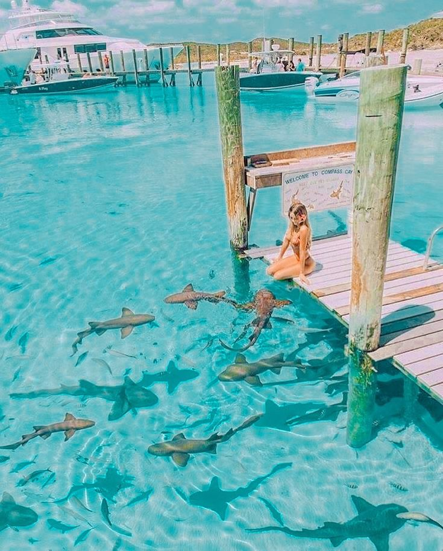

The destination
Compass Cay
Explore the natural beauty of Compass Cay, where island scenery and brilliant sea colours create a peaceful setting. Take in the shoreline, appreciate the surrounding waters and enjoy a slower pace in one of the best-known corners of the Exuma Cays.